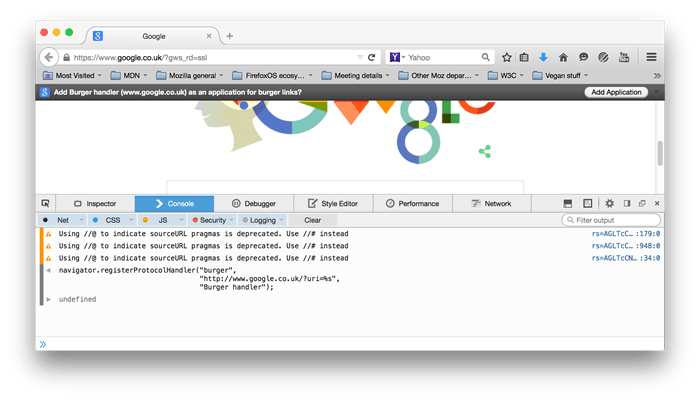

Allows web sites to register themselves as possible handlers for particular protocols.
For security reasons, by default, web sites may only register protocol handlers for themselves — the domain and protocol of the handler must match the current site. However, users may set a preference in Firefox to allow cross website installation, by setting the gecko.handlerService.allowRegisterFromDifferentHost pref to true in about:config.
Extensions can register protocol handlers targeting other sites: see the 'See Also' section for how to use them from XPCOM.
Syntax
window.navigator.registerProtocolHandler(protocol, url, title);
Parameters
protocol- The protocol the site wishes to handle, specified as a string. For example, you can register to handle SMS text message links by registering to handle the "sms" scheme.
url- The URL of the handler, as a string. This string should include "%s" as a placeholder which will be replaced with the escaped URL of the document to be handled. This URL might be a true URL, or it could be a phone number, email address, or so forth.
The handler's URL must use one of "http" or "https" as its scheme.
title- A user-readable title string for the protocol handler. This will be displayed to the user in interface objects as needed.
Exceptions
SecurityError- The user agent blocked registration of the protocol handler. This might happen if an invalid scheme is specified, such as "http", which cannot be registered for obvious security reasons.
SyntaxError- The "%s" string is missing from the specified protocol handler URL.
Permitted schemes
For security reasons, registerProtocolHandler() has restrictions on which schemes may be registered. A custom scheme may be registered as long as the scheme's name begins with "web+", is at least five characters long (including the "web+" prefix), and has only lower-case ASCII letters in its name. For example, "web+burger", as shown in the Example below.
Otherwise, the scheme must be one of the schemes on the whitelist below:
bitcoingeoimircircsmagnetmailtommsnewsnntpsipsmssmstosshtelurnwebcalwtaixmpp
Example
If your web application is located at http://www.google.co.uk, you can register a protocol handler for it to handle "web+burger" links like this:
navigator.registerProtocolHandler("web+burger",
"https://www.google.co.uk/?uri=%s",
"Burger handler");
This creates a handler that allows web+burger:// links to direct the user to your web application, inserting the burger information specified in the link into the URL. Recall that this script must be run from the same domain (so any page location at google.co.uk) and the second argument passed must be of http or https scheme (in this example it is https) .
The user will be notified that your code has asked to register the protocol handler, so that they can decide whether or not to permit it. See the screenshot below for an example.

"Register a webmail service as mailto handler" shows how to do this from XPCOM scope.
Specifications
| Specification | Status | Comment |
|---|---|---|
| WHATWG HTML Living Standard The definition of 'registerProtocolHandler()' in that specification. |
Living Standard | Initial definition |
Browser compatibility
| Feature | Chrome | Firefox (Gecko) | Internet Explorer | Opera | Safari |
|---|---|---|---|---|---|
| Basic support | 13[1] | 3.0 (1.9) | ? | 11.60 | ? |
| Feature | Android | Firefox Mobile (Gecko) | IE Mobile | Opera Mobile | Safari Mobile |
|---|---|---|---|---|---|
| Basic support | ? | 3.0 (3.5) | ? | ? | ? |
[1] Protocol whitelist includes mailto, mms, nntp, rtsp, and webcal. Custom protocols must be prefixed with web+.
See also
- Web-based protocol handlers
- RegisterProtocolHandler Enhancing the Federated Web at Mozilla Webdev
- Web Application APIs - Custom scheme and content handlers - Whitelisted schemes
- Register a webmail service as mailto handler shows how to do
registerProtocolHandlerfrom XPCOM scope. - XPCOM Interface Reference > nsIWebContentHandlerRegistrar > registerContentHandler - This shows how to use this function XPCOM scope
{kind=link}